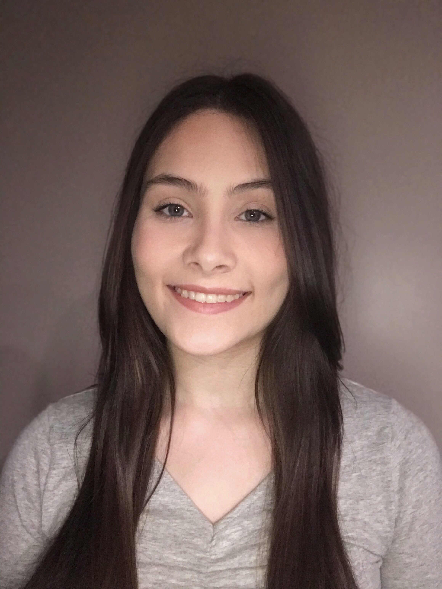

My name is Kaitlin Mejia-Crawford. I am a junior at UNO and my major is management information systems. Some of my favorite hobbies are to play games with friends and to travel. I also enjoy trying out different food places to see where I can get the best food. One of my favorite foods are tacos so I enjoy trying out different food trucks to see what taste the best.
